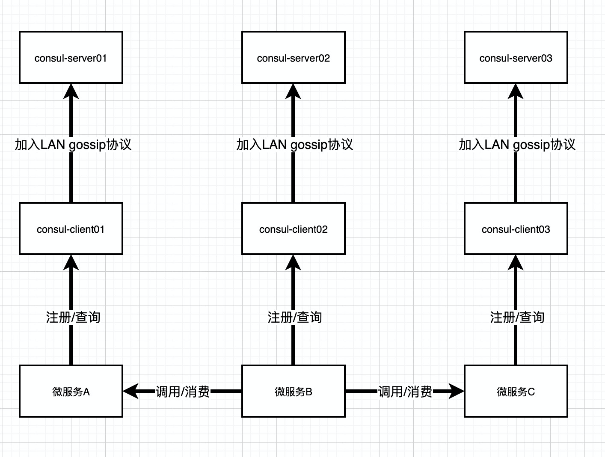
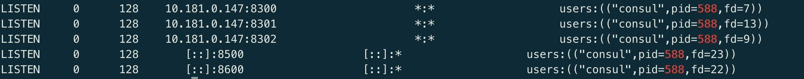

概述：
Consul是HashiCorp公司推出的开源软件，基于 GO 语言编写，提供服务注册和发现、配置、多数据中心的高可用方案等能力，分布式一致方面采用 raft 算法实现，并且很容易和 Spring Cloud 等微服务框架集成，使用起来非常简单，具有简单、易用、可插排等特点
但是，如果只使用Consul的Server模式有以下2个问题：
因为Consul Server数量受到控制所以压力承载（扩展性）是个问题。
Server很少导致一个Server下会注册很多微服务，当Server挂掉，这个Server节点下注册的微服务都会视为无效。
基于上述问题我们在架构中加入Consul Client模式，Client因为加入了LAN gossip协议组成网络中（高速局域网），可以识别故障的Server节点并找到可用的Server节点继续工作，其实Server模式负责的是用WAN gossip协议组成的网络进行跨广域网的数据同步（多个数据中心），这点Client模式是做不到的，Client模式也提供服务的注册和查询，但Client模式不存储节点数据，Client将请求转发给Server进行处理，节点注册数据在Server端是持久化保存的，Client的数量可以无限多，Server的数量是受控制的。总之：Client模式+LAN gossip协议组成了一个数据中心中的各个节点，Server负责投票选出Leader进行数据中心内的数据同步，这个Leader还负责利用WAN gossip协议跨广域网的与其他数据中心进行数据同步。
PS:默认情况下Server的数量建议是 3 ~ 5 台，Client 的数量建议2 ~ 5台，这能平衡故障情况下的可用性和集群性能。
架构示意图：

数据中心设计
用户可以在单个物理数据中心、或跨多个数据中心部署Consul集群。对于运行时高读写的大型集群，将服务器部署在同物理地址可以提高性能；在云环境中，用户可以跨多个可用区域（zone）部署一个数据中心，例如每个可用区域对应一台单一的主机。Consul还可以通过WAN连接单独的集群组成多数据中心。
单数据中心
对于部署在同一个数据中心中的应用程序，我们建议使用一个Consul集群。Consul支持传统的三层架构应用，同样也支持微服务，搭建一个集群通常是3或5台机器，用户可以在可用性和性能间寻找平衡。
单个数据中心的节点（node）数建议不超过5000个，对于读写频繁的集群，可能需要进一步减少最大节点数，这具体取决KV对的数量以及监控数据的数量。当用户添加更多的客户端机器时，Gossip协议执行的时间会更长、
对于写负载高的集群，推荐使用硬件升级垂直扩展，并使用低延迟存储。
服务标签（Service Tag）可帮助用户对集群中的内容进行查询
多数据中心
用户可以通过WAN链接加入在不同数据中心中运行相同服务的Consul集群。集群间独立运行，仅通过8302端口上的WAN通信，除非通过命令行或者API明确配置，否则Consul服务器将仅从其本地数据中心返回结果。Consul不会在多个数据中心之间复制数据，但是用户可以使用consul-replicate工具定期同步KV数据。
比较好的实践是启用TLS服务名称检查，以避免代理意外交叉连接。
Consul的预查询（prepared queries）允许客户端在某一数据中心发生故障后，去另一个数据中心发现服务。例如本地数据中心dc1中的payment服务下线了，则预查询使用户能能访问到离该数据中心地理位置最近的其他正常服务。
默认情况下，预查询首先会在本地数据中心解析。它们不支持查询KV数据，但是可以使用ACLs。
部署
| 节点名称 | 节点IP | Agent类型 |
|---|---|---|
| consul-01 | 10.181.0.147 | server |
| consul-02 | 10.181.0.148 | server |
| consul-03 | 10.181.0.149 | server |
| consul-client | 10.181.0.152 | client |
1、安装 Consul
配置主机名，命令示例：（以下操作在所有节点配置）
hostnamectl set-hostname consul-01
hostnamectl set-hostname consul-02
hostnamectl set-hostname consul-03
hostnamectl set-hostname consul-client下载consul
export VER="1.12.3"
wget https://releases.hashicorp.com/consul/${VER}/consul_${VER}_linux_amd64.zip
unzip consul_${VER}_linux_amd64.zip -d /usr/local/bin/创建consul用户和组
groupadd --system consul
useradd -s /sbin/nologin --system -g consul consul创建consul安装目录
mkdir -p /data/consul/{config,data,logs}
chown -R consul:consul /data/consul
chmod -R 775 /data/consul设置 DNS 或编辑/etc/hosts 文件以配置所有服务器的主机名，替换example.com为您的实际域名。
cat >/etc/hosts<<EOF
10.181.0.147 consul-01.example.com consul-01
10.181.0.148 consul-02.example.com consul-02
10.181.0.149 consul-03.example.com consul-03
10.181.0.152 consul-client.example.com consul-client
EOF2、Server 节点配置
生成Consul secret
consul keygen为server节点创建json配置文件，其他节点配置修改IP地址及节点名称即可
consul-01节点
cat >/data/consul/config/consul.json<<EOF
{
"advertise_addr": "10.181.0.147",
"bind_addr": "10.181.0.147",
"bootstrap_expect": 3,
"client_addr": "0.0.0.0",
"datacenter": "DC1",
"node_name": "consul-01",
"data_dir": "/opt/consul/data",
"domain": "consul",
"enable_script_checks": true,
"dns_config": {
"enable_truncate": true,
"only_passing": true
},
"enable_syslog": true,
"encrypt": "Ao8dtyz2Clor34Zxh8zviWZECboXeM+mBj97kq2mxtk=",#将上门的srcret替换
"leave_on_terminate": true,
"log_level": "INFO",
"rejoin_after_leave": true,
"retry_join": [
"consul-01",
"consul-02",
"consul-03"
],
"server": true,
"start_join": [
"consul-01",
"consul-02",
"consul-03"
],
"ui": true
}
EOF配置参数说明：
datacenter：此标志控制运行代理的数据中心。如果未提供，则默认为dc1。Consul 对多个数据中心有一流的支持，但它依赖于正确的配置。同一数据中心中的节点应位于单个 LAN 上。
data_dir：该标志为代理提供了一个数据目录来存储状态。
node_name：节点名字，一般为主机名。
server：指定是否为server节点。
bootstrap_expect：在一个datacenter中期望提供的server节点数目，当提供该值的时候，consul一直等到达到指定sever数目才会引导整个集群，该标记不能和bootstrap公用。
bind_addr：该地址用来在集群内部的通讯，集群内的所有节点到地址都必须是可达的，默认是0.0.0.0。
client_addr：Consul 将绑定客户端接口的地址，包括 HTTP 和 DNS 服务器。默认情况下，这是127.0.0.1，仅允许环回连接。在 Consul 1.0 及更高版本中，这可以设置为要绑定到的以空格分隔的地址列表。
log_json：此标志使代理能够以 JSON 格式输出日志。默认为false。
log_level:在 Consul 代理启动后显示的日志级别。默认为 info 。可用的日志级别是trace、debug、info、warn和err。
retry_join：指定将要置入集群的IP列表，如果失败，会自动重试，知道直到成功加入。
start_join：启动时加入集群的地址
ui_config：此对象允许设置多个子键，用于控制 UI 中可用的显示或功能。
rejoin_after_leave ：允许重新加入集群
3、Client 节点配置
client是consul客户端，客户端不保存数据，客户端将接收到的请求转发给Server端。Server之间通过局域网或广域网通信实现数据一致性。每个Server或Client都是一个consul agent。
创建consul-client节点配置文件
cat >/data/consul/config/consul.json<<EOF
{
"advertise_addr": "10.181.0.152",
"bind_addr": "10.181.0.152",
"client_addr": "0.0.0.0",
"datacenter": "DC1",
"node_name": "consul-client",
"data_dir": "/data/consul/data",
"domain": "consul",
"enable_script_checks": true,
"dns_config": {
"enable_truncate": true,
"only_passing": true
},
"enable_syslog": true,
"encrypt": "Ao8dtyz2Clor34Zxh8zviWZECboXeM+mBj97kq2mxtk=",
"leave_on_terminate": true,
"log_level": "INFO",
"rejoin_after_leave": true,
"retry_join": [
"consul-01",
"consul-02",
"consul-03"
],
"server": false,
"start_join": [
"consul-01",
"consul-02",
"consul-03"
],
"ui": true
}
EOF4、systemd 启动文件
所有节点创建systemd 服务文件/etc/systemd/system/consul.service，所有节点具有相同内容，配置如下：
cat >/etc/systemd/system/consul.service<<EOF
[Unit]
Description=Consul Service Discovery Agent
Documentation=https://www.consul.io/
After=network-online.target
Wants=network-online.target
[Service]
Type=simple
User=consul
Group=consul
ExecStart=/usr/local/bin/consul agent -config-dir=/data/consul/config/consul.json
ExecReload=/bin/kill -HUP $MAINPID
KillSignal=SIGINT
TimeoutStopSec=5
Restart=on-failure
SyslogIdentifier=consul
[Install]
WantedBy=multi-user.target
EOF所有节点启动consul服务
systemctl enable --now consul.service端口介绍

这5个端口的作用：
- 8300：集群内数据的读写和复制
- 8301：单个数据中心gossip协议通讯
- 8302：跨数据中心gossip协议通讯
- 8500：提供获取服务列表、注册服务、注销服务等HTTP接口；提供UI服务
- 8600：采用DNS协议提供服务发现功能
常用命令
查看成员
consul members查看版本号
consul version列出所有服务
consul catalog services -http-addr=localhost:8500